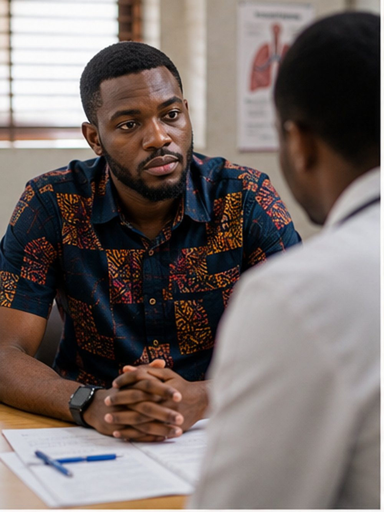
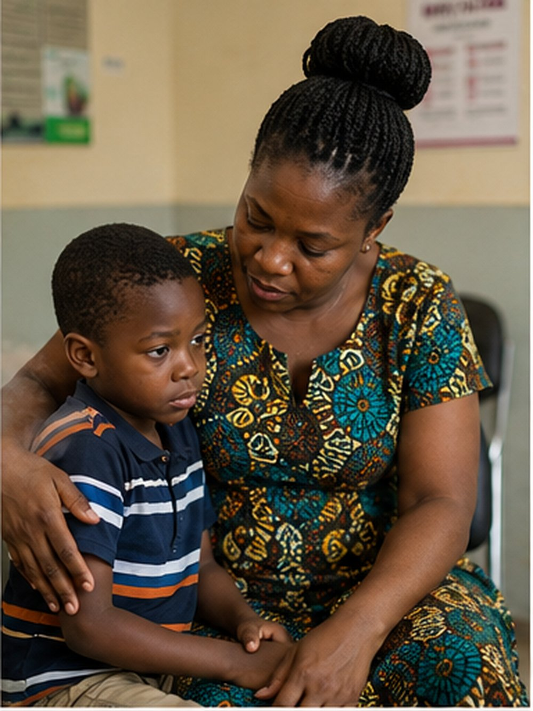

Getting started
What is CF?
Cystic fibrosis is a severe genetic disorder that affects the lungs, digestive system, and other organs. The sad reality, however, is that there's limited capacity to diagnose the disease in Ghana.
Our mission
Bridging the gap between CF and the people living with it
To support individuals and families affected by Cystic Fibrosis in Ghana by building a community that promotes early diagnosis, better access to care, patient advocacy and family support .
Our vision
A future where CF is never faced alone
To work towards a future where everyone living with Cystic Fibrosis in Ghana can receive proper care, breathing easier, and live a full life.
New to CF? Just diagnosed?
We know it's a lot. Here's where to start.

I'm an adult who was just diagnosed
Get oriented on what CF means for your day-to-day, your care team, and the questions worth asking first.
Start here →
My child has just been diagnosed
Understand the diagnosis, what comes next clinically, and how to connect with other Ghanaian families.
Talk to us →Unrecognized
There is limited capacity to diagnose CF in Ghana, so children with its symptoms are treated for chest infections and malnutrition rather than screened for a genetic cause.
Understudied
African CFTR variants remain sharply underrepresented in the databases that clinicians and labs worldwide rely on to interpret genetic results.
Underserved
Where CF is diagnosed, the modulator therapies that have transformed outcomes elsewhere are still largely out of reach across sub-Saharan Africa.
Our approach
We are in a relentless pursuit of earlier diagnosis.
CF Foundation Ghana exists to raise clinical and public awareness of cystic fibrosis, expand access to accurate diagnosis, and connect Ghanaian families to the information, care networks, and research that can change the course of the disease.
Awareness & diagnosis
Public and clinical education so cystic fibrosis is recognized as a possibility, paired with support for sweat testing and genetic confirmation where it's currently scarce.
Read the CF basics →Data & family support
Contributing Ghanaian CFTR data to bridge the African representation gap, alongside practical guidance for families navigating a new diagnosis.
See how to help →Latest updates
From the foundation
Foundation launches awareness campaign
Replace with your first real update: an event recap, a partnership, or a milestone worth sharing.
Building our first clinical partnerships
A short note on who you're talking to and why it matters for CF diagnosis access in Ghana.
How to support our first cohort of families
An update families and donors can act on: a specific ask, a specific outcome.
Stories
You're among a growing community
"Finding a name for what my son had changed everything about his care."
Read full story →"I am motivated by the potential to help generate knowledge that is relevant to our own populations."
Read full story →"Being part of something that bridges a data gap for Africa matters to me."
Read full story →For general inquiries
+233 XX XXX XXXX
CF Foundation Ghana · Accra, Ghana
cysticfibrosisfoundationgh@gmail.com
More ways to get in touch